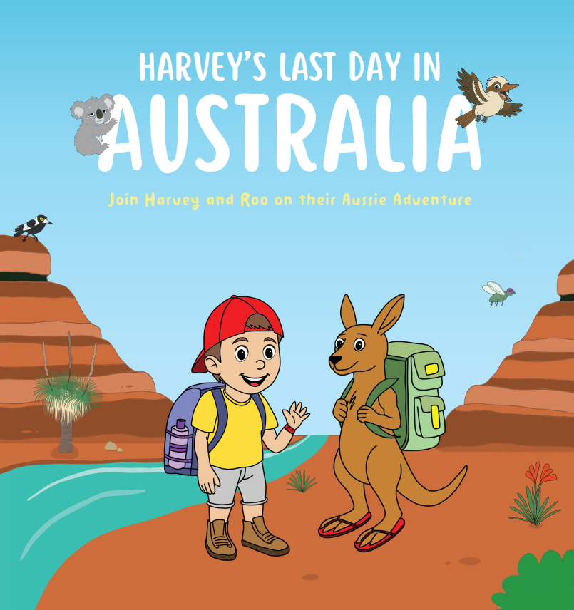

Explore current and upcoming titles created to inspire imagination, connection, and meaningful reading experiences for children, families, and educators. These books have purposefully design resources to help children become more engaged with their reading and delve more deeply into the books illustrations and storyline.

Watch a Free Book Reading AboveBook Synopsis: Harvey has just found out he’s moving away… But Roo has one last Aussie adventure planned. Before it’s time to say goodbye, the friends set off on a special journey through the wonder and magic of Australia, discovering that courage, friendship and love can travel with you wherever you go. Inspired by our own family’s move overseas and the mix of wobbles and wonder that comes with big adventures, this heartfelt story celebrates brave little hearts and the journeys that help us find our way.
Watch this space for more upcoming childrens stories.